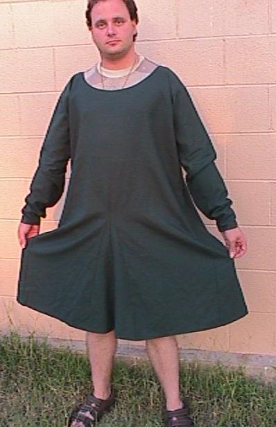
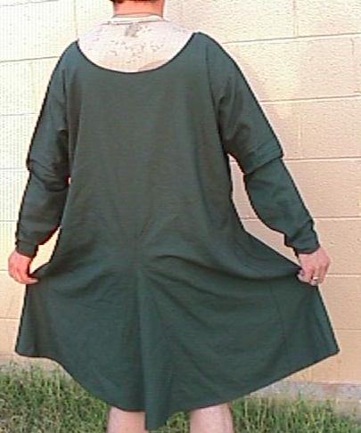

To see more about the garment this was based on, go here:
Go to Reconstruction Page; Bockten Bog Site Page
Some Clothing of the Middle Ages - Reconstructions - The Bocksten Cote, by I. Marc Carlson, Copyright 1999 This code is given for the free exchange of information, provided the Author's Name is included in all future revisions, and no money change hands-